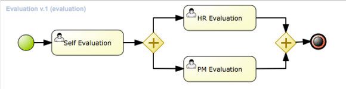
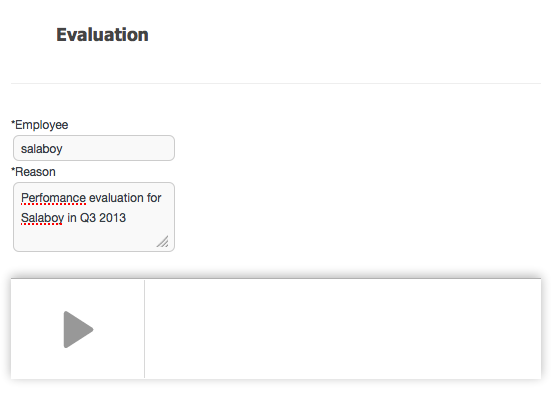
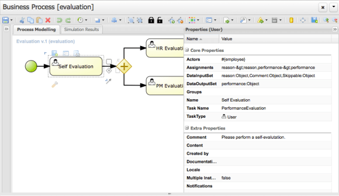

KIE WORKBENCH: TESTING THE EVALUATION PROCESS
A old/new example was migrated to https://github.com/droolsjbpm/jbpm-playground.git , The evaluation project is now provided and you can try it out following my previous posts from here and here. The Evaluation process shows how a task can be created and assigned based on a process variable. Feel free to try it out and give some feedback about it. Look at the end of the post, if you are looking for helping us to build useful examples.
The Evaluation Process Example
This example simulates an internal Evaluation process for the employees inside Acme Inc. This process is executed every quarter once per person inside the research department. The Human Resources department of Acme Inc. will instantiate one process instance for each employee adding a reason justifying why the evaluation is being performed.

- Evaluation Process
In order to instantiate a process instance you need to specify the user/employee that you are going to evaluate. Notice that the “employee” needs to be a valid user in the system. This is because the first task of the process called “Self Evaluation” will be automatically assigned to the specified employee.

- New Process Instance
In this case the Evaluation will be performed on the already configured user called “salaboy”. So the first task will be automatically assigned to “salaboy“. In order to see the task you will need to be logged as “salaboy”.
Notice that the “HR Evaluation” and the “PR Evaluation” are performed by the HR and PR group respectively. So you need to have users configured for those Groups in order to see the tasks associated with them.
The following screenshot shows how to assign a task to a specific actor using a process variable. In this case the #{employee} expression is picking the process variable called “employee” and assigning the task to the specified actor. For that reason it is important that the employee entered in the first form exists.

- Assigning a Task Using a Process Variable
Once you complete the “Self Evaluation” task the HR Evaluation and PM Evaluation Tasks will be automatically created. You will need to log out and login with users in the HR and PM group in order to perform those tasks and complete the process instance.
Join Us Providing your Example Processes
If you have a process example or a business scenario that you want to see working in the KIE Workbench and you think that it can serve as an example for other people to get used to the tool or to show some specific functionality, please get in touch and we can work together to get that included in the jbpm-playground repository. Notice that I would like to keep only high level and business oriented processes inside that repository, so make sure that it make some sense from the business perspective level. We will be creating
I will be posting more examples over the week, so we can cover a wide range of scenarios that allows users to build their own by copying from the examples or at least using them as guidelines.

{kind=link}
{kind=link}
{kind=link}